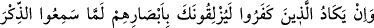
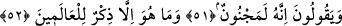

NEREDEYSE SENİ GÖZLERİYLE
DEVİRİVERECEKLERDİ
51. O inkâr edenler Zikr’i (Kur’an’ı) işittikleri zaman, neredeyse seni gözleriyle
devirivereceklerdi. Hâla da (kin ve hasedlerinden:) «Hiç şüphe yok o bir delidir»
derler.
52. Oysa o (Kur’an), âlemler için ancak bir öğüttür.
“O inkâr edenler Zikr’i (Kur’an’ı) işittikleri zaman, neredeyse seni gözleriyle
devirivereceklerdi.”
Âyette yer alan “in” kelimesi in-i muhaffefe’dir; zira ilerde gelen “lâm” böyle
olduğuna delildir. “Yüzlikûn” kelimesi, “ayağını kaydırdı, devirdi” anlamındadır.
“Lemmâ” edâtı -dilbilgisi kurallarına göre- zarf olup “yüzlikûn” fiilinin mansûbudur.
Buna göre âyet-i kerîmenin mânâsı şöyle olur: O inkâr edenler, besledikleri şiddetli
düşmanlık nedeniyle, sana gözlerinin ucuyla ve kızgın bakışlarıyla âdetâ ayaklarını
kaydıracakmış gibi bakarlar. Bunu daha ziyâde Kur’an’ı dinlerken yaparlar. Çünkü
Kur’an’ı dinlerken sana daha şiddetli bir kin ve kıskançlık duyarlar.
Araplar böylesi ifâdeleri günlük hayatlarında kullanırlar. Sözgelimi “nazara ileyye
nazaran yekâdu yasraunî” derler. Yâni “adam bana öyle bir bakış baktı ki, neredeyse
beni yere yıkacaktı.” Bir başka ifâdeyle, eğer adamın bu bakışı ile insanı yere yıkması
mümkün olsaydı bunu yapardı.
Âyeti şu şekilde anlamak da mümkündür: O inkâr edenler, zikri işittikleri zaman
neredeyse sana nazar değdireceklerdi. Keşfu’l-esrar’da ifâde olunduğuna göre
âlimlerin çoğu, âyetin bu son mânâya geldiğini söylemişlerdir. Rivâyete göre araplardan
Esedoğulları içinde göz değdiren, nazarları etkili kimseler varmış. Arapçada ‘ayyân,
mi’yân ve ayûn kelimelerinin tümü “nazarı değen kişi” mânâsını ifâde eder. Böyle
kimselerden birisinin, herhangi bir şeye gözünün değmesini istediklerinde onu üç gün aç
bırakırlar, sonra da o şey ile aç kalan kişiyi başbaşa bırakırlardı. Aç kalan kişi,
“Allah’a yemin ederim ki, bundan daha güzelini hiç görmedim” der ve nazar değmesini
istedikleri şey bu söz üzerine hemen yere yıkılırdı. Nazarı keskin kişilerden birisi,
semiz bir deveye ya da sığıra bakar ve ona göz değdirirdi. Ardından câriyesine; “ölçek
âletini ve dirhemi al, bana şu hayvanın etinden kes de getir” derdi. Câriye ölçeği almaya
yönelir yönelmez nazar ettiği o hayvan yere yıkılır ve hemen boğazlanırdı.
Kısacası gözü değen kimseler herhangi bir şeyin yanından geçip de “bugün bunun bir